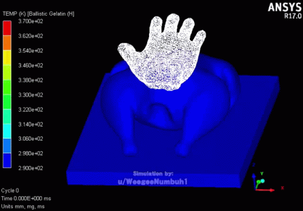

Slapped Chicken

Description
You all saw that popular internet post that did the rounds a while ago. With this simple recipe, you don't even need any equipment.
All that is required is a raw chicken, your bare hands, and the sheer amount of will required to cook it through the power of your
own slapping.
Ingredients
Directions
- Unwrap your chicken and lay on a clean, flat, sturdy surface
- Slap the chicken roughly 23,034 times or until cooked
- Alternatively, you may slap the chicken once at 1,666 meters per second if you prefer it well done
- Serve hot
Return to Main Page